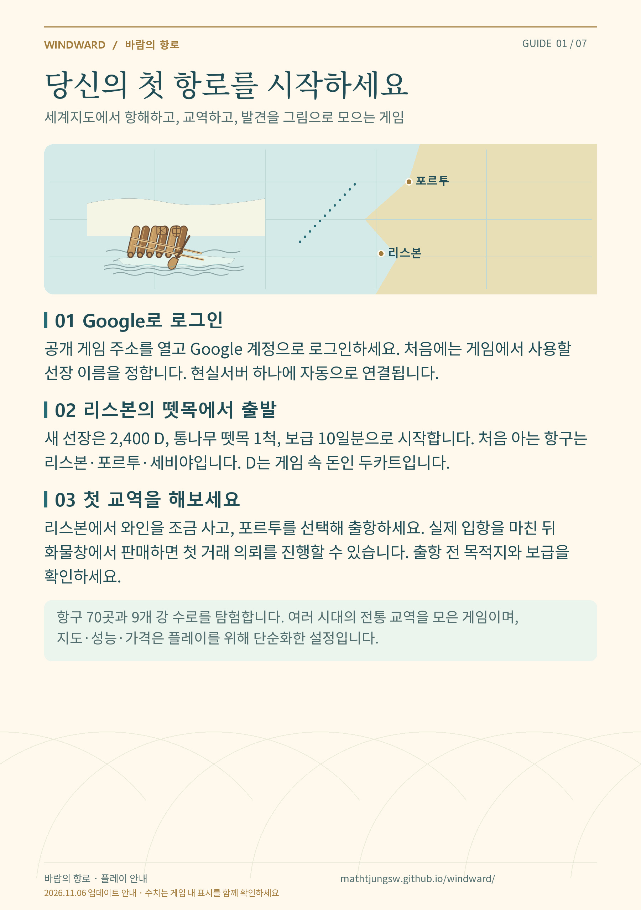
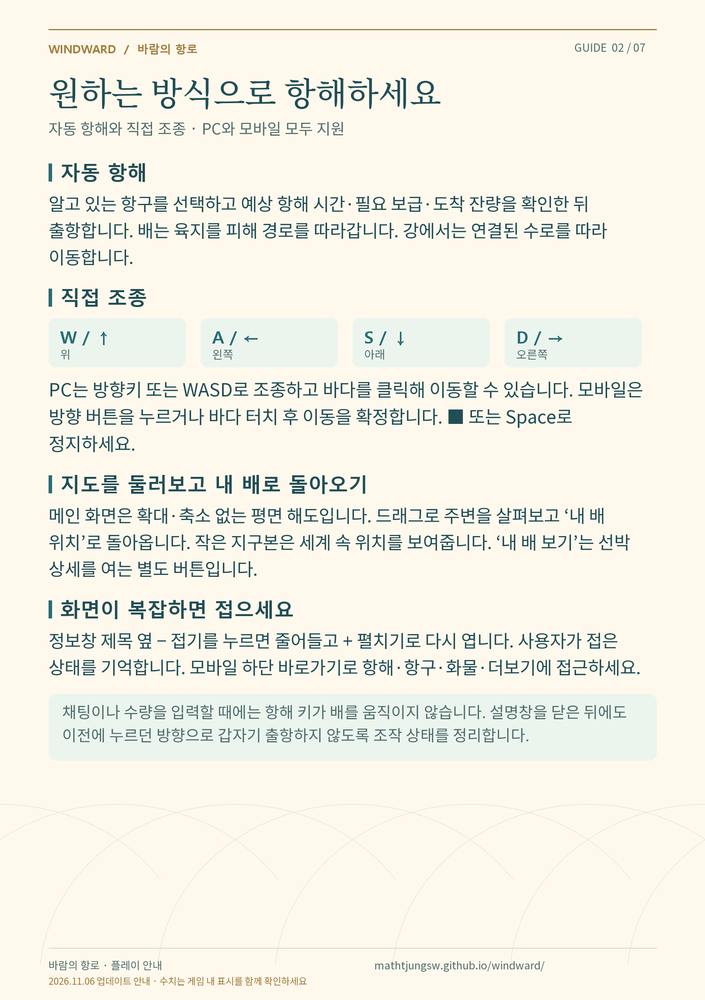
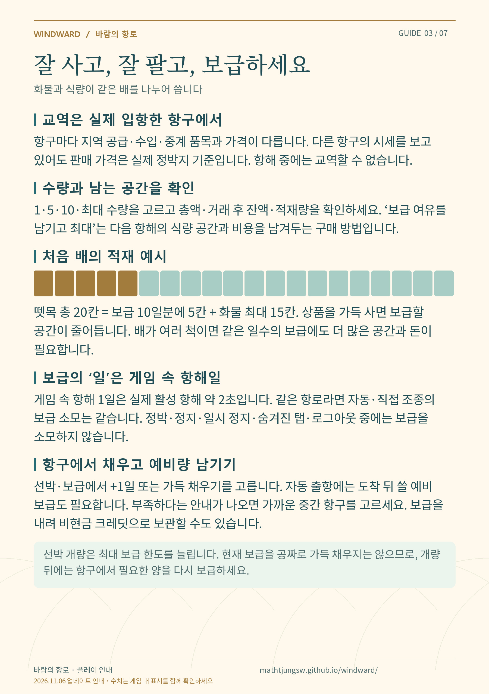
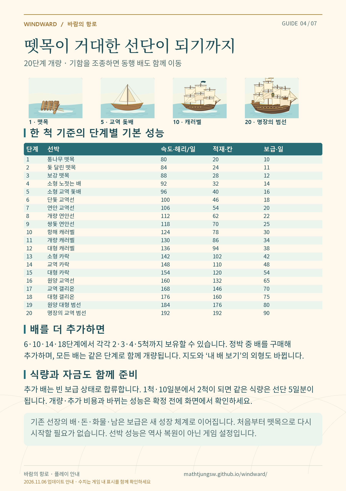
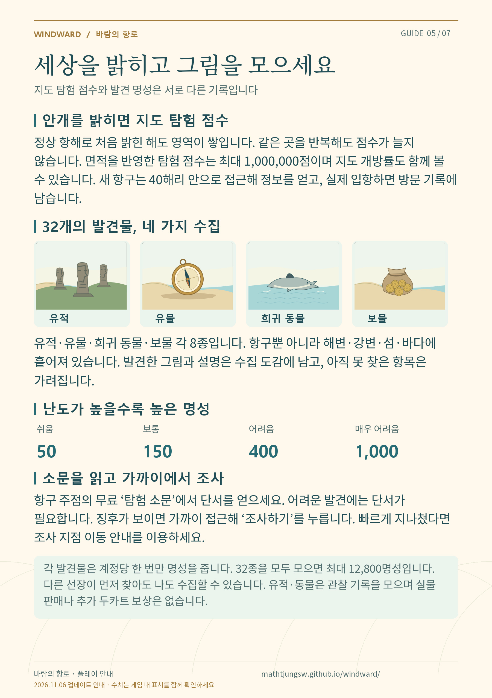
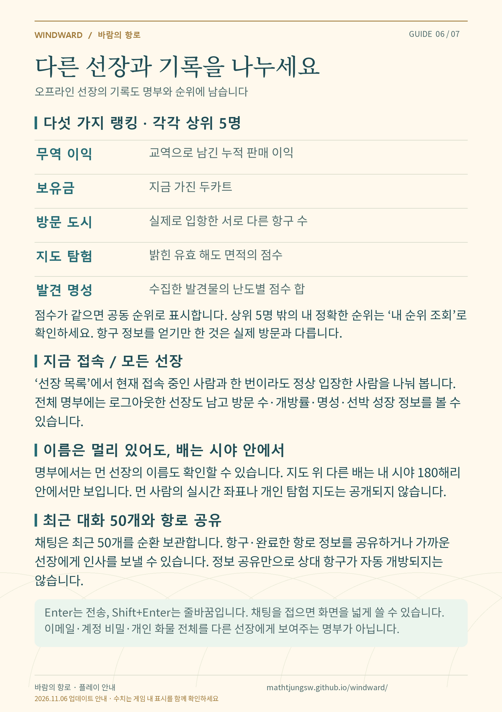
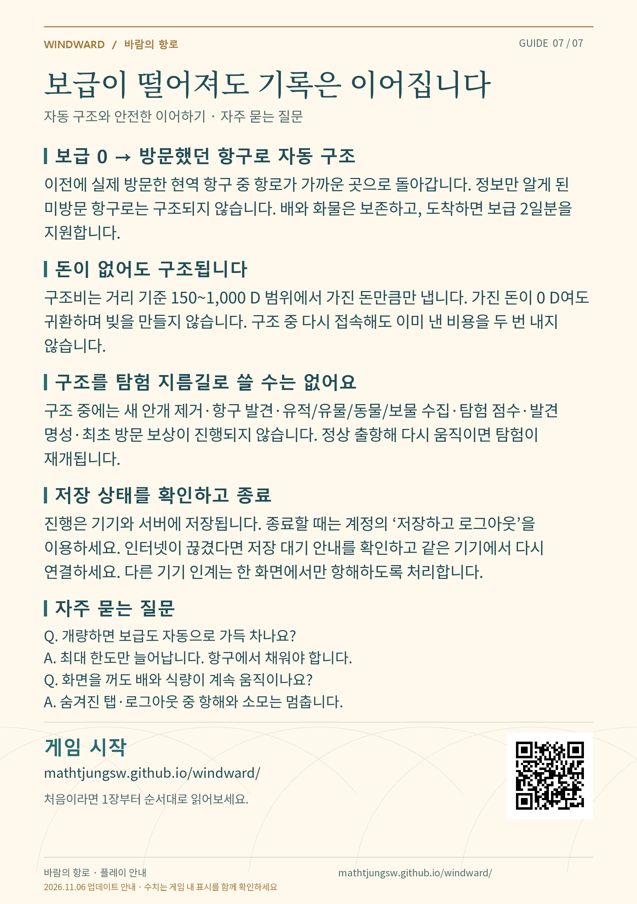

바람의 항로 · 자세한 게임 안내
2026.11.06 업데이트 기준 · 설명 JPG 7장입니다. 각 그림을 열어 저장하거나 전체 ZIP을 내려받으세요.
1. 게임 시작 · JPG 저장
2. 조작 방법 · JPG 저장
3. 교역과 보급 · JPG 저장
4. 20단계 선박과 선단 · JPG 저장
5. 탐험과 수집 · JPG 저장
6. 선장과 랭킹 · JPG 저장
7. 구조와 저장 · JPG 저장